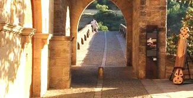
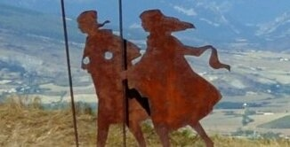
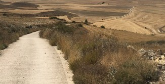
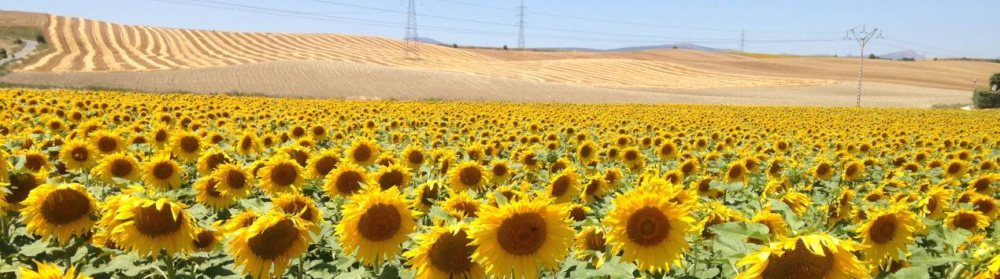

SoulWandering
Meditative Walks
CAMINO DE SANTIAGO ADVENTURE
Walk with mindfulness through the beauty of Spain
Join us in our meditative journeys through landscape, culture and cuisine
Our Walks

A memorable hike through wheat fields, vineyards and medieval villages along one of the oldest pilgrimage routes in the world.
- From Pamplona to Sto. Domingo de la Calzada
June 4-13, 2024
September 10-19, 2024

Because sometimes women simply want to walk amongst themselves, for endless reasons
– or perhaps none at all.
- From Pamplona to Sto. Domingo de la Calzada
June 18-27, 2024
October 15-24, 2024

For people who know that, by pushing themselves to their limits, they can achieve a new form of clarity and mental presence.
- From Pamplona to Sto. Domingo de la Calzada
July 15-21, 2024
October 1-7, 2024
Our philosophy

“And this is precisely the secret held by all those who go by foot: life is prolonged when you walk. Walking expands time”
Erling Kagge, Walking
The art of walking
Walking has always been a way for people to connect with themselves and their environment in a deeper and more balanced way.
A path full of history
Along el Camino de Santiago, one of the largest and oldest pilgrimage routes in the world, walking takes on a special, transformative dimension.
A mindful adventure
Centuries of history, the collective spirit of the hundreds of hikers and landscapes of unparalleled beauty makes this journey an exploration that is both inward and outward.
Discovering space
Whether you're looking for a change of pace in your life or a unique travel destination, our walks offer you an unforgettable, mindful opportunity to savour the beauty of Northern Spain.
We take care of you...
At SoulWandering, we take care of you every step of the way. Cozy accommodations, culinary experiences, luggage transport, group logistics.
...and you enjoy your experience
Walk mindfully, live the surroundings with your senses wide-opened and wholly inhabit each moment.
Escape Velocity
What is this meditative walking?
Let us be clear. This is not a retreat, and we are not gurus. Not that we don't like retreats. Simply, our walks are an immersive practice: wandering with mindfulness through pleasurable sensory experiences.
As facilitators, we will offer daily meditation tips to help you enjoy the journey in a more mindful way.
Yes, you can!
You will walk at your own pace, unhurriedly, according to the rhythms of your body. And we will stop repeatedly at agreed places to have a coffee in a charming stone village or to enjoy the beauty of the landscape.
Our walks are open to people of all ages in reasonably good physical condition.
With yourself, in a group
Our itinerary balances solitude and togetherness. We encourage moments of silence, digital disconnection and introspection.
But our walks include also powerful experiences as a group, such as shared meals, guided tours, evening conversations in front of a drink and much more.
The delights of comfort
In the spirit of SoulWandering, no sacrifices are expected.
We always sleep in beautiful rural guesthouses or boutique hotels.
Every evening a culinary adventure awaits us to discover the best local cuisine, to regain our strength and delight our palates.
Mailing Address
SoulWandering
Carrer Tapioles 12, 4-2
08004 Barcelona – Spain
WhatsApp DM
(+34) 693 48 60 08
- Under the General Data Protection Regulation (GDPR) (EU) 2016/679, we have a legal duty to protect any information we collect from you. Information contained in this email and any attachments may be privileged or confidential and intended for the exclusive use of the original recipient. If you have received a email from Soulwandering by mistake, please advise the sender immediately and delete the email, including emptying your deleted email box.